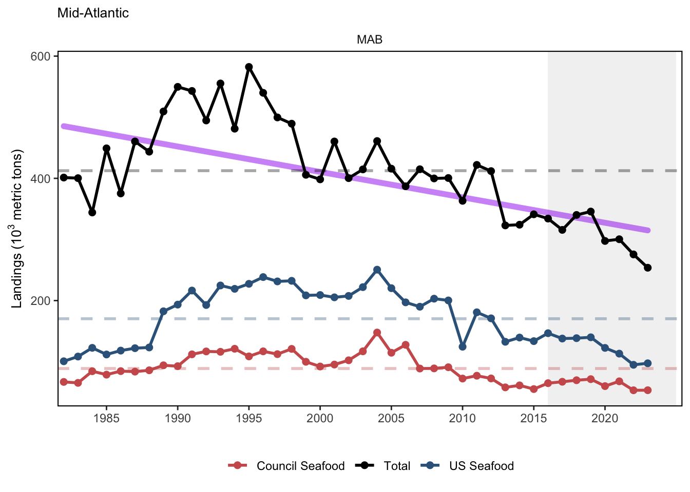
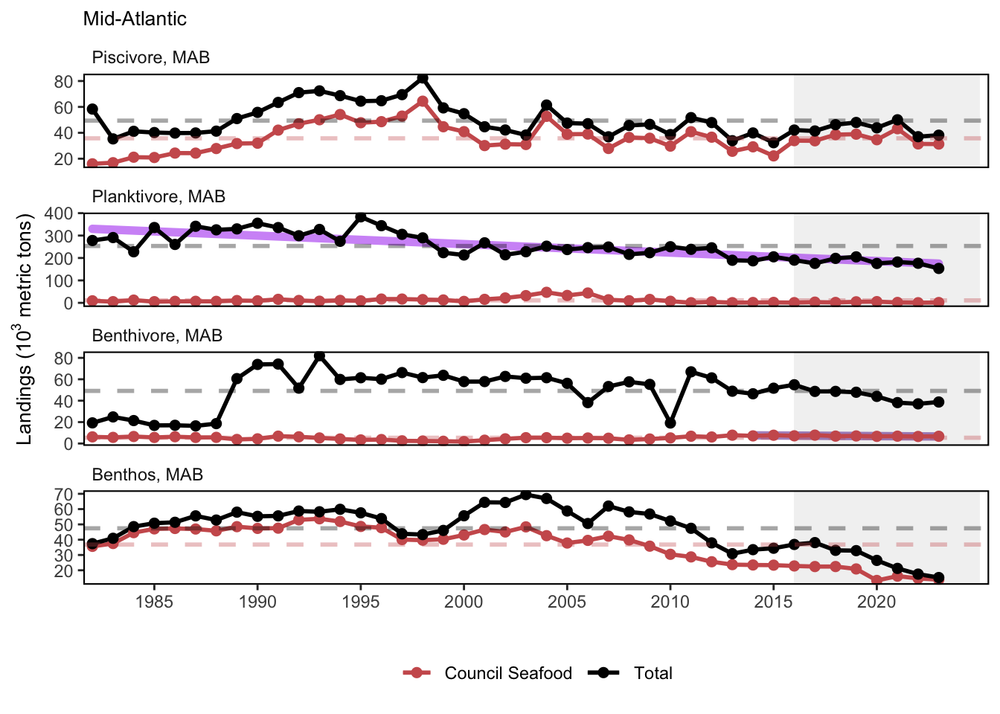
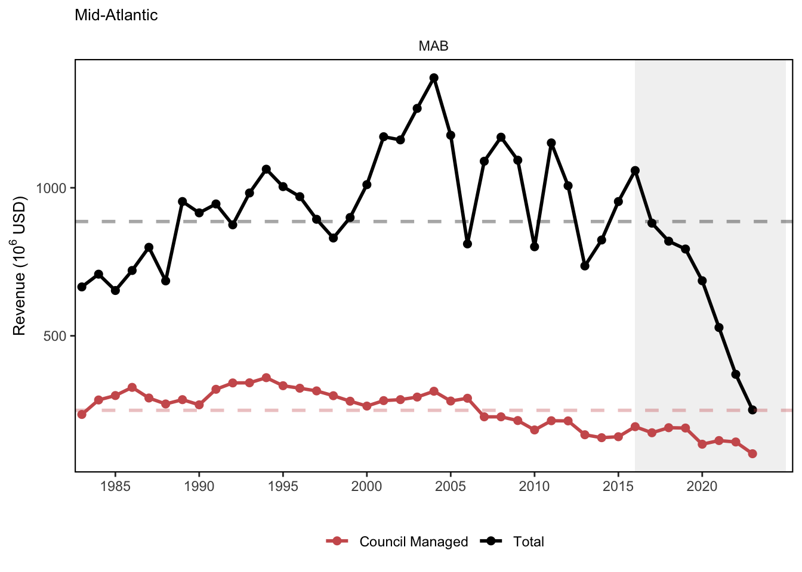
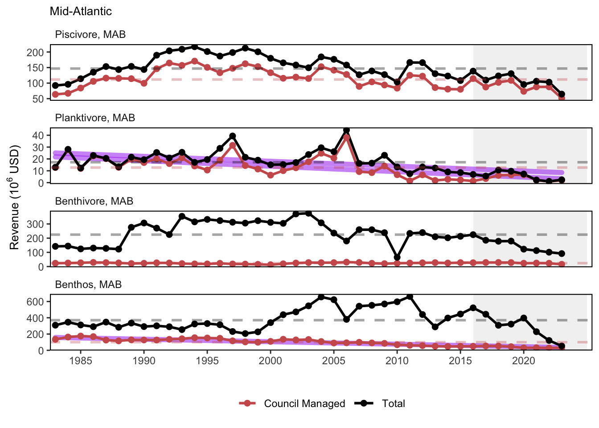
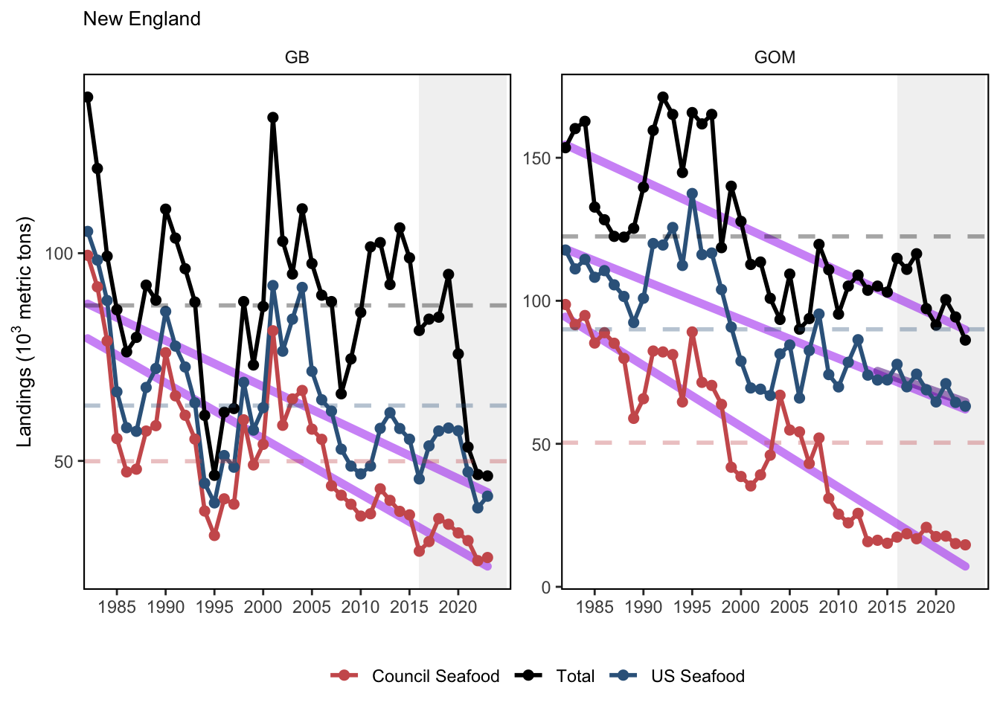
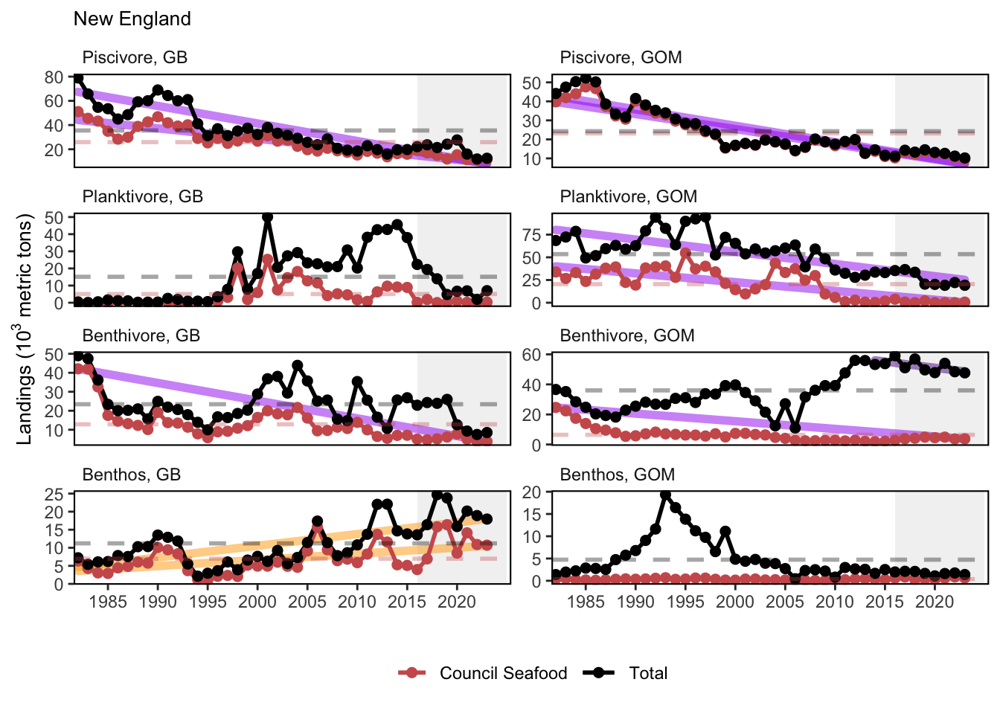
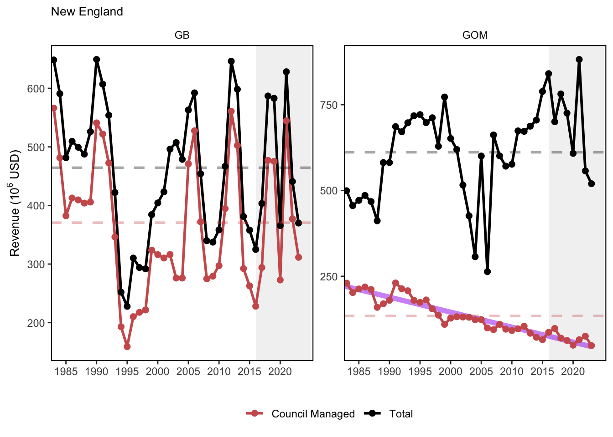
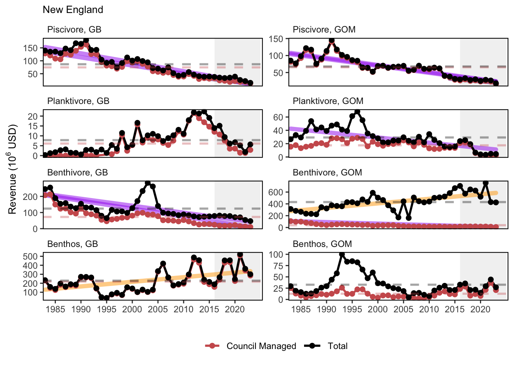

SMART Indicator Report: Commercial Landings and Revenue
1 Descriptive Section
1.2 Indicator name
Commercial Landings and Revenue
Includes variable(s): Apex Predator Landings, Apex Predator Landings - US only, Apex Predator Other managed species - Landings weight, Apex Predator Other managed species - Landings weight - US only, Apex Predator Other managed species - Revenue, Apex Predator Other managed species - Seafood Landings, Apex Predator Revenue, Apex Predator Seafood Landings, Benthivore Landings, Benthivore Landings - US only, Benthivore MAFMC managed species - Landings weight, Benthivore MAFMC managed species - Landings weight - US only, Benthivore MAFMC managed species - Revenue, Benthivore MAFMC managed species - Seafood Landings, Benthivore NEFMC managed species - Landings weight, Benthivore NEFMC managed species - Landings weight - US only, Benthivore NEFMC managed species - Revenue, Benthivore NEFMC managed species - Seafood Landings, Benthivore Other managed species - Landings weight, Benthivore Other managed species - Landings weight - US only, Benthivore Other managed species - Revenue, Benthivore Other managed species - Seafood Landings, Benthivore Revenue, Benthivore Seafood Landings, Benthos Landings, Benthos Landings - US only, Benthos MAFMC managed species - Landings weight, Benthos MAFMC managed species - Landings weight - US only, Benthos MAFMC managed species - Revenue, Benthos MAFMC managed species - Seafood Landings, Benthos NEFMC managed species - Landings weight, Benthos NEFMC managed species - Landings weight - US only, Benthos NEFMC managed species - Revenue, Benthos NEFMC managed species - Seafood Landings, Benthos Other managed species - Landings weight, Benthos Other managed species - Landings weight - US only, Benthos Other managed species - Revenue, Benthos Other managed species - Seafood Landings, Benthos Revenue, Benthos Seafood Landings, Landings, Other Landings, Other Landings - US only, Other MAFMC managed species - Landings weight, Other MAFMC managed species - Landings weight - US only, Other MAFMC managed species - Revenue, Other MAFMC managed species - Seafood Landings, Other NEFMC managed species - Landings weight, Other NEFMC managed species - Landings weight - US only, Other NEFMC managed species - Revenue, Other NEFMC managed species - Seafood Landings, Other Other managed species - Landings weight, Other Other managed species - Landings weight - US only, Other Other managed species - Revenue, Other Other managed species - Seafood Landings, Other Revenue, Other Seafood Landings, Piscivore JOINT managed species - Landings weight, Piscivore JOINT managed species - Landings weight - US only, Piscivore JOINT managed species - Revenue, Piscivore JOINT managed species - Seafood Landings, Piscivore Landings, Piscivore Landings - US only, Piscivore MAFMC managed species - Landings weight, Piscivore MAFMC managed species - Landings weight - US only, Piscivore MAFMC managed species - Revenue, Piscivore MAFMC managed species - Seafood Landings, Piscivore NEFMC managed species - Landings weight, Piscivore NEFMC managed species - Landings weight - US only, Piscivore NEFMC managed species - Revenue, Piscivore NEFMC managed species - Seafood Landings, Piscivore Other managed species - Landings weight, Piscivore Other managed species - Landings weight - US only, Piscivore Other managed species - Revenue, Piscivore Other managed species - Seafood Landings, Piscivore Revenue, Piscivore Seafood Landings, Planktivore Landings, Planktivore Landings - US only, Planktivore MAFMC managed species - Landings weight, Planktivore MAFMC managed species - Landings weight - US only, Planktivore MAFMC managed species - Revenue, Planktivore MAFMC managed species - Seafood Landings, Planktivore NEFMC managed species - Landings weight, Planktivore NEFMC managed species - Landings weight - US only, Planktivore NEFMC managed species - Revenue, Planktivore NEFMC managed species - Seafood Landings, Planktivore Other managed species - Landings weight, Planktivore Other managed species - Landings weight - US only, Planktivore Other managed species - Revenue, Planktivore Other managed species - Seafood Landings, Planktivore Revenue, Planktivore Seafood Landings, Revenue, Seafood Landings
1.4 Indicator visualization
Landings have fluctuated over time in all regions. In the two northern regions, a majority of the catch is used for human consumption (seafood) while less so in the Mid-Atlantic. Commercial seafood landings have been declining in both the Mid-Atlantic and Gulf of Maine regions. Commercial revenue by managed species has generally been down. The exception is on Georges Bank where there is a cyclical nature to revenue arising from rotational scallop management. Total fisheries revenue in the Gulf of Maine has been increasing while total revenue has declined in the Mid-Atlantic.

2 SMART Attribute Section
2.1 Indicator documentation
2.1.1 Are indicators available for others to use (data downloadable)?
Yes
2.1.1.1 Where can indicators be found?
Data: https://noaa-edab.github.io/ecodata/index.html
Description: https://noaa-edab.github.io/catalog/comdat.html
Technical documentation: https://noaa-edab.github.io/tech-doc/comdat.html
2.1.1.2 How often are they updated? Are future updates likely?
[need sequential look at datasets for update frequency. Future requires judgement]
2.1.1.3 Who is the contact?
Andrew Beet (Andrew.Beet@NOAA.gov)
2.1.2 Gather indicator statistics
2.1.2.1 Units
Indicator | Units |
|---|---|
Apex Predator Landings | metric tons |
Apex Predator Landings - US only | metric tons |
Apex Predator Other managed species - Landings weight | metric tons |
Apex Predator Other managed species - Landings weight - US only | metric tons |
Apex Predator Other managed species - Revenue | US dollars |
Apex Predator Other managed species - Seafood Landings | metric tons |
Apex Predator Revenue | US dollars |
Apex Predator Seafood Landings | metric tons |
Benthivore Landings | metric tons |
Benthivore Landings - US only | metric tons |
Benthivore MAFMC managed species - Landings weight | metric tons |
Benthivore MAFMC managed species - Landings weight - US only | metric tons |
Benthivore MAFMC managed species - Revenue | US dollars |
Benthivore MAFMC managed species - Seafood Landings | metric tons |
Benthivore NEFMC managed species - Landings weight | metric tons |
Benthivore NEFMC managed species - Landings weight - US only | metric tons |
Benthivore NEFMC managed species - Revenue | US dollars |
Benthivore NEFMC managed species - Seafood Landings | metric tons |
Benthivore Other managed species - Landings weight | metric tons |
Benthivore Other managed species - Landings weight - US only | metric tons |
Benthivore Other managed species - Revenue | US dollars |
Benthivore Other managed species - Seafood Landings | metric tons |
Benthivore Revenue | US dollars |
Benthivore Seafood Landings | metric tons |
Benthos Landings | metric tons |
Benthos Landings - US only | metric tons |
Benthos MAFMC managed species - Landings weight | metric tons |
Benthos MAFMC managed species - Landings weight - US only | metric tons |
Benthos MAFMC managed species - Revenue | US dollars |
Benthos MAFMC managed species - Seafood Landings | metric tons |
Benthos NEFMC managed species - Landings weight | metric tons |
Benthos NEFMC managed species - Landings weight - US only | metric tons |
Benthos NEFMC managed species - Revenue | US dollars |
Benthos NEFMC managed species - Seafood Landings | metric tons |
Benthos Other managed species - Landings weight | metric tons |
Benthos Other managed species - Landings weight - US only | metric tons |
Benthos Other managed species - Revenue | US dollars |
Benthos Other managed species - Seafood Landings | metric tons |
Benthos Revenue | US dollars |
Benthos Seafood Landings | metric tons |
Landings | metric tons |
Other Landings | metric tons |
Other Landings - US only | metric tons |
Other MAFMC managed species - Landings weight | metric tons |
Other MAFMC managed species - Landings weight - US only | metric tons |
Other MAFMC managed species - Revenue | US dollars |
Other MAFMC managed species - Seafood Landings | metric tons |
Other NEFMC managed species - Landings weight | metric tons |
Other NEFMC managed species - Landings weight - US only | metric tons |
Other NEFMC managed species - Revenue | US dollars |
Other NEFMC managed species - Seafood Landings | metric tons |
Other Other managed species - Landings weight | metric tons |
Other Other managed species - Landings weight - US only | metric tons |
Other Other managed species - Revenue | US dollars |
Other Other managed species - Seafood Landings | metric tons |
Other Revenue | US dollars |
Other Seafood Landings | metric tons |
Piscivore JOINT managed species - Landings weight | metric tons |
Piscivore JOINT managed species - Landings weight - US only | metric tons |
Piscivore JOINT managed species - Revenue | US dollars |
Piscivore JOINT managed species - Seafood Landings | metric tons |
Piscivore Landings | metric tons |
Piscivore Landings - US only | metric tons |
Piscivore MAFMC managed species - Landings weight | metric tons |
Piscivore MAFMC managed species - Landings weight - US only | metric tons |
Piscivore MAFMC managed species - Revenue | US dollars |
Piscivore MAFMC managed species - Seafood Landings | metric tons |
Piscivore NEFMC managed species - Landings weight | metric tons |
Piscivore NEFMC managed species - Landings weight - US only | metric tons |
Piscivore NEFMC managed species - Revenue | US dollars |
Piscivore NEFMC managed species - Seafood Landings | metric tons |
Piscivore Other managed species - Landings weight | metric tons |
Piscivore Other managed species - Landings weight - US only | metric tons |
Piscivore Other managed species - Revenue | US dollars |
Piscivore Other managed species - Seafood Landings | metric tons |
Piscivore Revenue | US dollars |
Piscivore Seafood Landings | metric tons |
Planktivore Landings | metric tons |
Planktivore Landings - US only | metric tons |
Planktivore MAFMC managed species - Landings weight | metric tons |
Planktivore MAFMC managed species - Landings weight - US only | metric tons |
Planktivore MAFMC managed species - Revenue | US dollars |
Planktivore MAFMC managed species - Seafood Landings | metric tons |
Planktivore NEFMC managed species - Landings weight | metric tons |
Planktivore NEFMC managed species - Landings weight - US only | metric tons |
Planktivore NEFMC managed species - Revenue | US dollars |
Planktivore NEFMC managed species - Seafood Landings | metric tons |
Planktivore Other managed species - Landings weight | metric tons |
Planktivore Other managed species - Landings weight - US only | metric tons |
Planktivore Other managed species - Revenue | US dollars |
Planktivore Other managed species - Seafood Landings | metric tons |
Planktivore Revenue | US dollars |
Planktivore Seafood Landings | metric tons |
Revenue | US dollars |
Seafood Landings | metric tons |
2.1.2.2 Length of time series, start and end date, periodicity
General overview: Annual
Indicator specifics:
Indicator | EPU | StartYear | EndYear | NumYears | MissingYears |
|---|---|---|---|---|---|
Apex Predator Landings | GB | 1964 | 2023 | 60 | 0 |
Apex Predator Landings | GOM | 1964 | 2023 | 55 | 5 |
Apex Predator Landings | MAB | 1964 | 2023 | 60 | 0 |
Apex Predator Landings | Other | 1964 | 2023 | 57 | 3 |
Apex Predator Landings | SS | 1964 | 2023 | 53 | 7 |
Apex Predator Landings - US only | GB | 1964 | 2023 | 59 | 1 |
Apex Predator Landings - US only | GOM | 1964 | 2023 | 55 | 5 |
Apex Predator Landings - US only | MAB | 1964 | 2023 | 60 | 0 |
Apex Predator Landings - US only | Other | 1964 | 2023 | 57 | 3 |
Apex Predator Landings - US only | SS | 1973 | 2023 | 27 | 24 |
Apex Predator Other managed species - Landings weight | GB | 1964 | 2023 | 60 | 0 |
Apex Predator Other managed species - Landings weight | GOM | 1964 | 2023 | 55 | 5 |
Apex Predator Other managed species - Landings weight | MAB | 1964 | 2023 | 60 | 0 |
Apex Predator Other managed species - Landings weight | Other | 1964 | 2023 | 57 | 3 |
Apex Predator Other managed species - Landings weight | SS | 1964 | 2023 | 53 | 7 |
Apex Predator Other managed species - Landings weight - US only | GB | 1964 | 2023 | 59 | 1 |
Apex Predator Other managed species - Landings weight - US only | GOM | 1964 | 2023 | 55 | 5 |
Apex Predator Other managed species - Landings weight - US only | MAB | 1964 | 2023 | 60 | 0 |
Apex Predator Other managed species - Landings weight - US only | Other | 1964 | 2023 | 57 | 3 |
Apex Predator Other managed species - Landings weight - US only | SS | 1973 | 2023 | 27 | 24 |
Apex Predator Other managed species - Revenue | GB | 1964 | 2023 | 60 | 0 |
Apex Predator Other managed species - Revenue | GOM | 1964 | 2023 | 55 | 5 |
Apex Predator Other managed species - Revenue | MAB | 1964 | 2023 | 60 | 0 |
Apex Predator Other managed species - Revenue | Other | 1964 | 2023 | 57 | 3 |
Apex Predator Other managed species - Revenue | SS | 1964 | 2023 | 53 | 7 |
Apex Predator Other managed species - Seafood Landings | GB | 1964 | 2023 | 59 | 1 |
Apex Predator Other managed species - Seafood Landings | GOM | 1964 | 2023 | 55 | 5 |
Apex Predator Other managed species - Seafood Landings | MAB | 1964 | 2023 | 60 | 0 |
Apex Predator Other managed species - Seafood Landings | Other | 1964 | 2023 | 57 | 3 |
Apex Predator Other managed species - Seafood Landings | SS | 1973 | 2023 | 27 | 24 |
Apex Predator Revenue | GB | 1964 | 2023 | 60 | 0 |
Apex Predator Revenue | GOM | 1964 | 2023 | 55 | 5 |
Apex Predator Revenue | MAB | 1964 | 2023 | 60 | 0 |
Apex Predator Revenue | Other | 1964 | 2023 | 57 | 3 |
Apex Predator Revenue | SS | 1964 | 2023 | 53 | 7 |
Apex Predator Seafood Landings | GB | 1964 | 2023 | 59 | 1 |
Apex Predator Seafood Landings | GOM | 1964 | 2023 | 55 | 5 |
Apex Predator Seafood Landings | MAB | 1964 | 2023 | 60 | 0 |
Apex Predator Seafood Landings | Other | 1964 | 2023 | 57 | 3 |
Apex Predator Seafood Landings | SS | 1973 | 2023 | 27 | 24 |
Benthivore Landings | GB | 1964 | 2023 | 60 | 0 |
Benthivore Landings | GOM | 1964 | 2023 | 60 | 0 |
Benthivore Landings | MAB | 1964 | 2023 | 60 | 0 |
Benthivore Landings | Other | 1964 | 2023 | 60 | 0 |
Benthivore Landings | SS | 1964 | 2023 | 60 | 0 |
Benthivore Landings - US only | GB | 1964 | 2023 | 60 | 0 |
Benthivore Landings - US only | GOM | 1964 | 2023 | 60 | 0 |
Benthivore Landings - US only | MAB | 1964 | 2023 | 60 | 0 |
Benthivore Landings - US only | Other | 1964 | 2023 | 60 | 0 |
Benthivore Landings - US only | SS | 1964 | 2023 | 60 | 0 |
Benthivore MAFMC managed species - Landings weight | GB | 1964 | 2023 | 60 | 0 |
Benthivore MAFMC managed species - Landings weight | GOM | 1964 | 2023 | 60 | 0 |
Benthivore MAFMC managed species - Landings weight | MAB | 1964 | 2023 | 60 | 0 |
Benthivore MAFMC managed species - Landings weight | Other | 1964 | 2023 | 60 | 0 |
Benthivore MAFMC managed species - Landings weight | SS | 1981 | 2019 | 18 | 21 |
Benthivore MAFMC managed species - Landings weight - US only | GB | 1964 | 2023 | 60 | 0 |
Benthivore MAFMC managed species - Landings weight - US only | GOM | 1964 | 2023 | 60 | 0 |
Benthivore MAFMC managed species - Landings weight - US only | MAB | 1964 | 2023 | 60 | 0 |
Benthivore MAFMC managed species - Landings weight - US only | Other | 1964 | 2023 | 60 | 0 |
Benthivore MAFMC managed species - Landings weight - US only | SS | 1981 | 2019 | 18 | 21 |
Benthivore MAFMC managed species - Revenue | GB | 1964 | 2023 | 60 | 0 |
Benthivore MAFMC managed species - Revenue | GOM | 1964 | 2023 | 60 | 0 |
Benthivore MAFMC managed species - Revenue | MAB | 1964 | 2023 | 60 | 0 |
Benthivore MAFMC managed species - Revenue | Other | 1964 | 2023 | 60 | 0 |
Benthivore MAFMC managed species - Revenue | SS | 1981 | 2019 | 18 | 21 |
Benthivore MAFMC managed species - Seafood Landings | GB | 1964 | 2023 | 60 | 0 |
Benthivore MAFMC managed species - Seafood Landings | GOM | 1964 | 2023 | 60 | 0 |
Benthivore MAFMC managed species - Seafood Landings | MAB | 1964 | 2023 | 60 | 0 |
Benthivore MAFMC managed species - Seafood Landings | Other | 1964 | 2023 | 60 | 0 |
Benthivore MAFMC managed species - Seafood Landings | SS | 1981 | 2019 | 18 | 21 |
Benthivore NEFMC managed species - Landings weight | GB | 1964 | 2023 | 60 | 0 |
Benthivore NEFMC managed species - Landings weight | GOM | 1964 | 2023 | 60 | 0 |
Benthivore NEFMC managed species - Landings weight | MAB | 1964 | 2023 | 60 | 0 |
Benthivore NEFMC managed species - Landings weight | Other | 1964 | 2023 | 60 | 0 |
Benthivore NEFMC managed species - Landings weight | SS | 1964 | 2023 | 60 | 0 |
Benthivore NEFMC managed species - Landings weight - US only | GB | 1964 | 2023 | 60 | 0 |
Benthivore NEFMC managed species - Landings weight - US only | GOM | 1964 | 2023 | 60 | 0 |
Benthivore NEFMC managed species - Landings weight - US only | MAB | 1964 | 2023 | 60 | 0 |
Benthivore NEFMC managed species - Landings weight - US only | Other | 1964 | 2023 | 60 | 0 |
Benthivore NEFMC managed species - Landings weight - US only | SS | 1964 | 2023 | 60 | 0 |
Benthivore NEFMC managed species - Revenue | GB | 1964 | 2023 | 60 | 0 |
Benthivore NEFMC managed species - Revenue | GOM | 1964 | 2023 | 60 | 0 |
Benthivore NEFMC managed species - Revenue | MAB | 1964 | 2023 | 60 | 0 |
Benthivore NEFMC managed species - Revenue | Other | 1964 | 2023 | 60 | 0 |
Benthivore NEFMC managed species - Revenue | SS | 1964 | 2023 | 60 | 0 |
Benthivore NEFMC managed species - Seafood Landings | GB | 1964 | 2023 | 60 | 0 |
Benthivore NEFMC managed species - Seafood Landings | GOM | 1964 | 2023 | 60 | 0 |
Benthivore NEFMC managed species - Seafood Landings | MAB | 1964 | 2023 | 60 | 0 |
Benthivore NEFMC managed species - Seafood Landings | Other | 1964 | 2023 | 60 | 0 |
Benthivore NEFMC managed species - Seafood Landings | SS | 1964 | 2023 | 60 | 0 |
Benthivore Other managed species - Landings weight | GB | 1964 | 2023 | 60 | 0 |
Benthivore Other managed species - Landings weight | GOM | 1964 | 2023 | 60 | 0 |
Benthivore Other managed species - Landings weight | MAB | 1964 | 2023 | 60 | 0 |
Benthivore Other managed species - Landings weight | Other | 1964 | 2023 | 60 | 0 |
Benthivore Other managed species - Landings weight | SS | 1964 | 2023 | 60 | 0 |
Benthivore Other managed species - Landings weight - US only | GB | 1964 | 2023 | 60 | 0 |
Benthivore Other managed species - Landings weight - US only | GOM | 1964 | 2023 | 60 | 0 |
Benthivore Other managed species - Landings weight - US only | MAB | 1964 | 2023 | 60 | 0 |
Benthivore Other managed species - Landings weight - US only | Other | 1964 | 2023 | 60 | 0 |
Benthivore Other managed species - Landings weight - US only | SS | 1964 | 2023 | 60 | 0 |
Benthivore Other managed species - Revenue | GB | 1964 | 2023 | 60 | 0 |
Benthivore Other managed species - Revenue | GOM | 1964 | 2023 | 60 | 0 |
Benthivore Other managed species - Revenue | MAB | 1964 | 2023 | 60 | 0 |
Benthivore Other managed species - Revenue | Other | 1964 | 2023 | 60 | 0 |
Benthivore Other managed species - Revenue | SS | 1964 | 2023 | 60 | 0 |
Benthivore Other managed species - Seafood Landings | GB | 1964 | 2023 | 60 | 0 |
Benthivore Other managed species - Seafood Landings | GOM | 1964 | 2023 | 60 | 0 |
Benthivore Other managed species - Seafood Landings | MAB | 1964 | 2023 | 60 | 0 |
Benthivore Other managed species - Seafood Landings | Other | 1964 | 2023 | 60 | 0 |
Benthivore Other managed species - Seafood Landings | SS | 1964 | 2023 | 60 | 0 |
Benthivore Revenue | GB | 1964 | 2023 | 60 | 0 |
Benthivore Revenue | GOM | 1964 | 2023 | 60 | 0 |
Benthivore Revenue | MAB | 1964 | 2023 | 60 | 0 |
Benthivore Revenue | Other | 1964 | 2023 | 60 | 0 |
Benthivore Revenue | SS | 1964 | 2023 | 60 | 0 |
Benthivore Seafood Landings | GB | 1964 | 2023 | 60 | 0 |
Benthivore Seafood Landings | GOM | 1964 | 2023 | 60 | 0 |
Benthivore Seafood Landings | MAB | 1964 | 2023 | 60 | 0 |
Benthivore Seafood Landings | Other | 1964 | 2023 | 60 | 0 |
Benthivore Seafood Landings | SS | 1964 | 2023 | 60 | 0 |
Benthos Landings | GB | 1964 | 2023 | 60 | 0 |
Benthos Landings | GOM | 1964 | 2023 | 60 | 0 |
Benthos Landings | MAB | 1964 | 2023 | 60 | 0 |
Benthos Landings | Other | 1965 | 2023 | 59 | 0 |
Benthos Landings | SS | 1964 | 2023 | 60 | 0 |
Benthos Landings - US only | GB | 1964 | 2023 | 60 | 0 |
Benthos Landings - US only | GOM | 1964 | 2023 | 60 | 0 |
Benthos Landings - US only | MAB | 1964 | 2023 | 60 | 0 |
Benthos Landings - US only | Other | 1965 | 2023 | 59 | 0 |
Benthos Landings - US only | SS | 1964 | 2023 | 60 | 0 |
Benthos MAFMC managed species - Landings weight | GB | 1982 | 2023 | 42 | 0 |
Benthos MAFMC managed species - Landings weight | GOM | 1982 | 2023 | 42 | 0 |
Benthos MAFMC managed species - Landings weight | MAB | 1977 | 2023 | 47 | 0 |
Benthos MAFMC managed species - Landings weight | Other | 1977 | 2023 | 47 | 0 |
Benthos MAFMC managed species - Landings weight | SS | 1964 | 2023 | 52 | 8 |
Benthos MAFMC managed species - Landings weight - US only | GB | 1982 | 2023 | 42 | 0 |
Benthos MAFMC managed species - Landings weight - US only | GOM | 1982 | 2023 | 42 | 0 |
Benthos MAFMC managed species - Landings weight - US only | MAB | 1977 | 2023 | 47 | 0 |
Benthos MAFMC managed species - Landings weight - US only | Other | 1977 | 2023 | 47 | 0 |
Benthos MAFMC managed species - Landings weight - US only | SS | 1986 | 2023 | 38 | 0 |
Benthos MAFMC managed species - Revenue | GB | 1982 | 2023 | 42 | 0 |
Benthos MAFMC managed species - Revenue | GOM | 1982 | 2023 | 42 | 0 |
Benthos MAFMC managed species - Revenue | MAB | 1977 | 2023 | 47 | 0 |
Benthos MAFMC managed species - Revenue | Other | 1977 | 2023 | 47 | 0 |
Benthos MAFMC managed species - Revenue | SS | 1964 | 2023 | 52 | 8 |
Benthos MAFMC managed species - Seafood Landings | GB | 1982 | 2023 | 42 | 0 |
Benthos MAFMC managed species - Seafood Landings | GOM | 1982 | 2023 | 42 | 0 |
Benthos MAFMC managed species - Seafood Landings | MAB | 1977 | 2023 | 47 | 0 |
Benthos MAFMC managed species - Seafood Landings | Other | 1977 | 2023 | 47 | 0 |
Benthos MAFMC managed species - Seafood Landings | SS | 1986 | 2023 | 38 | 0 |
Benthos NEFMC managed species - Landings weight | GB | 1964 | 2023 | 60 | 0 |
Benthos NEFMC managed species - Landings weight | GOM | 1964 | 2023 | 60 | 0 |
Benthos NEFMC managed species - Landings weight | MAB | 1964 | 2023 | 60 | 0 |
Benthos NEFMC managed species - Landings weight | Other | 1965 | 2023 | 54 | 5 |
Benthos NEFMC managed species - Landings weight | SS | 1964 | 2023 | 60 | 0 |
Benthos NEFMC managed species - Landings weight - US only | GB | 1964 | 2023 | 60 | 0 |
Benthos NEFMC managed species - Landings weight - US only | GOM | 1964 | 2023 | 60 | 0 |
Benthos NEFMC managed species - Landings weight - US only | MAB | 1964 | 2023 | 60 | 0 |
Benthos NEFMC managed species - Landings weight - US only | Other | 1965 | 2023 | 54 | 5 |
Benthos NEFMC managed species - Landings weight - US only | SS | 1964 | 2023 | 60 | 0 |
Benthos NEFMC managed species - Revenue | GB | 1964 | 2023 | 60 | 0 |
Benthos NEFMC managed species - Revenue | GOM | 1964 | 2023 | 60 | 0 |
Benthos NEFMC managed species - Revenue | MAB | 1964 | 2023 | 60 | 0 |
Benthos NEFMC managed species - Revenue | Other | 1965 | 2023 | 54 | 5 |
Benthos NEFMC managed species - Revenue | SS | 1964 | 2023 | 60 | 0 |
Benthos NEFMC managed species - Seafood Landings | GB | 1964 | 2023 | 60 | 0 |
Benthos NEFMC managed species - Seafood Landings | GOM | 1964 | 2023 | 60 | 0 |
Benthos NEFMC managed species - Seafood Landings | MAB | 1964 | 2023 | 60 | 0 |
Benthos NEFMC managed species - Seafood Landings | Other | 1965 | 2023 | 54 | 5 |
Benthos NEFMC managed species - Seafood Landings | SS | 1964 | 2023 | 60 | 0 |
Benthos Other managed species - Landings weight | GB | 1967 | 2023 | 50 | 7 |
Benthos Other managed species - Landings weight | GOM | 1964 | 2023 | 60 | 0 |
Benthos Other managed species - Landings weight | MAB | 1966 | 2023 | 56 | 2 |
Benthos Other managed species - Landings weight | Other | 1966 | 2023 | 56 | 2 |
Benthos Other managed species - Landings weight | SS | 1965 | 2023 | 57 | 2 |
Benthos Other managed species - Landings weight - US only | GB | 1967 | 2023 | 50 | 7 |
Benthos Other managed species - Landings weight - US only | GOM | 1964 | 2023 | 60 | 0 |
Benthos Other managed species - Landings weight - US only | MAB | 1966 | 2023 | 56 | 2 |
Benthos Other managed species - Landings weight - US only | Other | 1966 | 2023 | 56 | 2 |
Benthos Other managed species - Landings weight - US only | SS | 1965 | 2023 | 56 | 3 |
Benthos Other managed species - Revenue | GB | 1967 | 2023 | 50 | 7 |
Benthos Other managed species - Revenue | GOM | 1964 | 2023 | 60 | 0 |
Benthos Other managed species - Revenue | MAB | 1966 | 2023 | 56 | 2 |
Benthos Other managed species - Revenue | Other | 1966 | 2023 | 56 | 2 |
Benthos Other managed species - Revenue | SS | 1965 | 2023 | 57 | 2 |
Benthos Other managed species - Seafood Landings | GB | 1967 | 2023 | 50 | 7 |
Benthos Other managed species - Seafood Landings | GOM | 1964 | 2023 | 60 | 0 |
Benthos Other managed species - Seafood Landings | MAB | 1966 | 2023 | 56 | 2 |
Benthos Other managed species - Seafood Landings | Other | 1966 | 2023 | 56 | 2 |
Benthos Other managed species - Seafood Landings | SS | 1965 | 2023 | 56 | 3 |
Benthos Revenue | GB | 1964 | 2023 | 60 | 0 |
Benthos Revenue | GOM | 1964 | 2023 | 60 | 0 |
Benthos Revenue | MAB | 1964 | 2023 | 60 | 0 |
Benthos Revenue | Other | 1965 | 2023 | 59 | 0 |
Benthos Revenue | SS | 1964 | 2023 | 60 | 0 |
Benthos Seafood Landings | GB | 1964 | 2023 | 60 | 0 |
Benthos Seafood Landings | GOM | 1964 | 2023 | 60 | 0 |
Benthos Seafood Landings | MAB | 1964 | 2023 | 60 | 0 |
Benthos Seafood Landings | Other | 1965 | 2023 | 59 | 0 |
Benthos Seafood Landings | SS | 1964 | 2023 | 60 | 0 |
Landings | GB | 1964 | 2023 | 60 | 0 |
Landings | GOM | 1964 | 2023 | 60 | 0 |
Landings | MAB | 1964 | 2023 | 60 | 0 |
Landings | Other | 1964 | 2023 | 60 | 0 |
Landings | OTHER | 1996 | 2023 | 23 | 5 |
Landings | SS | 1964 | 2023 | 60 | 0 |
Other Landings | GB | 1964 | 2023 | 60 | 0 |
Other Landings | GOM | 1964 | 2023 | 60 | 0 |
Other Landings | MAB | 1964 | 2023 | 60 | 0 |
Other Landings | Other | 1964 | 2023 | 60 | 0 |
Other Landings | OTHER | 2000 | 2018 | 7 | 12 |
Other Landings | SS | 1964 | 2023 | 60 | 0 |
Other Landings - US only | GB | 1964 | 2023 | 60 | 0 |
Other Landings - US only | GOM | 1964 | 2023 | 60 | 0 |
Other Landings - US only | MAB | 1964 | 2023 | 60 | 0 |
Other Landings - US only | Other | 1964 | 2023 | 60 | 0 |
Other Landings - US only | OTHER | 2000 | 2018 | 7 | 12 |
Other Landings - US only | SS | 1964 | 2023 | 60 | 0 |
Other MAFMC managed species - Landings weight | GB | 2005 | 2023 | 16 | 3 |
Other MAFMC managed species - Landings weight | GOM | 2012 | 2023 | 5 | 7 |
Other MAFMC managed species - Landings weight | MAB | 2000 | 2023 | 24 | 0 |
Other MAFMC managed species - Landings weight | Other | 1999 | 2023 | 25 | 0 |
Other MAFMC managed species - Landings weight | SS | 2008 | 2013 | 2 | 4 |
Other MAFMC managed species - Landings weight - US only | GB | 2005 | 2023 | 16 | 3 |
Other MAFMC managed species - Landings weight - US only | GOM | 2012 | 2023 | 5 | 7 |
Other MAFMC managed species - Landings weight - US only | MAB | 2000 | 2023 | 24 | 0 |
Other MAFMC managed species - Landings weight - US only | Other | 1999 | 2023 | 25 | 0 |
Other MAFMC managed species - Landings weight - US only | SS | 2008 | 2013 | 2 | 4 |
Other MAFMC managed species - Revenue | GB | 2005 | 2023 | 16 | 3 |
Other MAFMC managed species - Revenue | GOM | 2012 | 2023 | 5 | 7 |
Other MAFMC managed species - Revenue | MAB | 2000 | 2023 | 24 | 0 |
Other MAFMC managed species - Revenue | Other | 1999 | 2023 | 25 | 0 |
Other MAFMC managed species - Revenue | SS | 2008 | 2013 | 2 | 4 |
Other MAFMC managed species - Seafood Landings | GB | 2005 | 2023 | 16 | 3 |
Other MAFMC managed species - Seafood Landings | GOM | 2012 | 2023 | 5 | 7 |
Other MAFMC managed species - Seafood Landings | MAB | 2000 | 2023 | 24 | 0 |
Other MAFMC managed species - Seafood Landings | Other | 1999 | 2023 | 25 | 0 |
Other MAFMC managed species - Seafood Landings | SS | 2008 | 2013 | 2 | 4 |
Other NEFMC managed species - Landings weight | GB | 1987 | 2023 | 13 | 24 |
Other NEFMC managed species - Landings weight | GOM | 1964 | 2023 | 32 | 28 |
Other NEFMC managed species - Landings weight | MAB | 1982 | 2023 | 30 | 12 |
Other NEFMC managed species - Landings weight | Other | 1974 | 2023 | 17 | 33 |
Other NEFMC managed species - Landings weight | SS | 1964 | 2023 | 42 | 18 |
Other NEFMC managed species - Landings weight - US only | GB | 1987 | 2023 | 13 | 24 |
Other NEFMC managed species - Landings weight - US only | GOM | 1964 | 2023 | 32 | 28 |
Other NEFMC managed species - Landings weight - US only | MAB | 1982 | 2023 | 30 | 12 |
Other NEFMC managed species - Landings weight - US only | Other | 1974 | 2023 | 17 | 33 |
Other NEFMC managed species - Landings weight - US only | SS | 1976 | 2023 | 22 | 26 |
Other NEFMC managed species - Revenue | GB | 1987 | 2023 | 13 | 24 |
Other NEFMC managed species - Revenue | GOM | 1964 | 2023 | 32 | 28 |
Other NEFMC managed species - Revenue | MAB | 1982 | 2023 | 30 | 12 |
Other NEFMC managed species - Revenue | Other | 1974 | 2023 | 17 | 33 |
Other NEFMC managed species - Revenue | SS | 1964 | 2023 | 42 | 18 |
Other NEFMC managed species - Seafood Landings | GB | 1987 | 2023 | 13 | 24 |
Other NEFMC managed species - Seafood Landings | GOM | 1964 | 2023 | 32 | 28 |
Other NEFMC managed species - Seafood Landings | MAB | 1982 | 2023 | 27 | 15 |
Other NEFMC managed species - Seafood Landings | Other | 1974 | 2023 | 16 | 34 |
Other NEFMC managed species - Seafood Landings | SS | 1976 | 2023 | 15 | 33 |
Other Other managed species - Landings weight | GB | 1964 | 2023 | 60 | 0 |
Other Other managed species - Landings weight | GOM | 1964 | 2023 | 60 | 0 |
Other Other managed species - Landings weight | MAB | 1964 | 2023 | 60 | 0 |
Other Other managed species - Landings weight | Other | 1964 | 2023 | 60 | 0 |
Other Other managed species - Landings weight | OTHER | 2000 | 2018 | 7 | 12 |
Other Other managed species - Landings weight | SS | 1964 | 2023 | 60 | 0 |
Other Other managed species - Landings weight - US only | GB | 1964 | 2023 | 60 | 0 |
Other Other managed species - Landings weight - US only | GOM | 1964 | 2023 | 60 | 0 |
Other Other managed species - Landings weight - US only | MAB | 1964 | 2023 | 60 | 0 |
Other Other managed species - Landings weight - US only | Other | 1964 | 2023 | 60 | 0 |
Other Other managed species - Landings weight - US only | OTHER | 2000 | 2018 | 7 | 12 |
Other Other managed species - Landings weight - US only | SS | 1964 | 2023 | 60 | 0 |
Other Other managed species - Revenue | GB | 1964 | 2023 | 60 | 0 |
Other Other managed species - Revenue | GOM | 1964 | 2023 | 60 | 0 |
Other Other managed species - Revenue | MAB | 1964 | 2023 | 60 | 0 |
Other Other managed species - Revenue | Other | 1964 | 2023 | 60 | 0 |
Other Other managed species - Revenue | OTHER | 2000 | 2018 | 7 | 12 |
Other Other managed species - Revenue | SS | 1964 | 2023 | 60 | 0 |
Other Other managed species - Seafood Landings | GB | 1964 | 2023 | 60 | 0 |
Other Other managed species - Seafood Landings | GOM | 1964 | 2023 | 60 | 0 |
Other Other managed species - Seafood Landings | MAB | 1964 | 2023 | 60 | 0 |
Other Other managed species - Seafood Landings | Other | 1964 | 2023 | 60 | 0 |
Other Other managed species - Seafood Landings | OTHER | 2000 | 2018 | 7 | 12 |
Other Other managed species - Seafood Landings | SS | 1964 | 2023 | 60 | 0 |
Other Revenue | GB | 1964 | 2023 | 60 | 0 |
Other Revenue | GOM | 1964 | 2023 | 60 | 0 |
Other Revenue | MAB | 1964 | 2023 | 60 | 0 |
Other Revenue | Other | 1964 | 2023 | 60 | 0 |
Other Revenue | OTHER | 2000 | 2018 | 7 | 12 |
Other Revenue | SS | 1964 | 2023 | 60 | 0 |
Other Seafood Landings | GB | 1964 | 2023 | 60 | 0 |
Other Seafood Landings | GOM | 1964 | 2023 | 60 | 0 |
Other Seafood Landings | MAB | 1964 | 2023 | 60 | 0 |
Other Seafood Landings | Other | 1964 | 2023 | 60 | 0 |
Other Seafood Landings | OTHER | 2000 | 2018 | 7 | 12 |
Other Seafood Landings | SS | 1964 | 2023 | 60 | 0 |
Piscivore JOINT managed species - Landings weight | GB | 1965 | 2023 | 59 | 0 |
Piscivore JOINT managed species - Landings weight | GOM | 1964 | 2023 | 60 | 0 |
Piscivore JOINT managed species - Landings weight | MAB | 1964 | 2023 | 60 | 0 |
Piscivore JOINT managed species - Landings weight | Other | 1965 | 2023 | 57 | 2 |
Piscivore JOINT managed species - Landings weight | SS | 1964 | 2023 | 59 | 1 |
Piscivore JOINT managed species - Landings weight - US only | GB | 1965 | 2023 | 59 | 0 |
Piscivore JOINT managed species - Landings weight - US only | GOM | 1964 | 2023 | 60 | 0 |
Piscivore JOINT managed species - Landings weight - US only | MAB | 1964 | 2023 | 60 | 0 |
Piscivore JOINT managed species - Landings weight - US only | Other | 1965 | 2023 | 57 | 2 |
Piscivore JOINT managed species - Landings weight - US only | SS | 1975 | 2023 | 49 | 0 |
Piscivore JOINT managed species - Revenue | GB | 1965 | 2023 | 59 | 0 |
Piscivore JOINT managed species - Revenue | GOM | 1964 | 2023 | 60 | 0 |
Piscivore JOINT managed species - Revenue | MAB | 1964 | 2023 | 60 | 0 |
Piscivore JOINT managed species - Revenue | Other | 1965 | 2023 | 57 | 2 |
Piscivore JOINT managed species - Revenue | SS | 1964 | 2023 | 59 | 1 |
Piscivore JOINT managed species - Seafood Landings | GB | 1965 | 2023 | 59 | 0 |
Piscivore JOINT managed species - Seafood Landings | GOM | 1964 | 2023 | 60 | 0 |
Piscivore JOINT managed species - Seafood Landings | MAB | 1964 | 2023 | 60 | 0 |
Piscivore JOINT managed species - Seafood Landings | Other | 1965 | 2023 | 57 | 2 |
Piscivore JOINT managed species - Seafood Landings | SS | 1975 | 2023 | 49 | 0 |
Piscivore Landings | GB | 1964 | 2023 | 60 | 0 |
Piscivore Landings | GOM | 1964 | 2023 | 60 | 0 |
Piscivore Landings | MAB | 1964 | 2023 | 60 | 0 |
Piscivore Landings | Other | 1964 | 2023 | 60 | 0 |
Piscivore Landings | SS | 1964 | 2023 | 60 | 0 |
Piscivore Landings - US only | GB | 1964 | 2023 | 60 | 0 |
Piscivore Landings - US only | GOM | 1964 | 2023 | 60 | 0 |
Piscivore Landings - US only | MAB | 1964 | 2023 | 60 | 0 |
Piscivore Landings - US only | Other | 1964 | 2023 | 60 | 0 |
Piscivore Landings - US only | SS | 1964 | 2023 | 60 | 0 |
Piscivore MAFMC managed species - Landings weight | GB | 1964 | 2023 | 60 | 0 |
Piscivore MAFMC managed species - Landings weight | GOM | 1964 | 2023 | 60 | 0 |
Piscivore MAFMC managed species - Landings weight | MAB | 1964 | 2023 | 60 | 0 |
Piscivore MAFMC managed species - Landings weight | Other | 1964 | 2023 | 60 | 0 |
Piscivore MAFMC managed species - Landings weight | SS | 1964 | 2023 | 56 | 4 |
Piscivore MAFMC managed species - Landings weight - US only | GB | 1964 | 2023 | 60 | 0 |
Piscivore MAFMC managed species - Landings weight - US only | GOM | 1964 | 2023 | 60 | 0 |
Piscivore MAFMC managed species - Landings weight - US only | MAB | 1964 | 2023 | 60 | 0 |
Piscivore MAFMC managed species - Landings weight - US only | Other | 1964 | 2023 | 60 | 0 |
Piscivore MAFMC managed species - Landings weight - US only | SS | 1965 | 2023 | 39 | 20 |
Piscivore MAFMC managed species - Revenue | GB | 1964 | 2023 | 60 | 0 |
Piscivore MAFMC managed species - Revenue | GOM | 1964 | 2023 | 60 | 0 |
Piscivore MAFMC managed species - Revenue | MAB | 1964 | 2023 | 60 | 0 |
Piscivore MAFMC managed species - Revenue | Other | 1964 | 2023 | 60 | 0 |
Piscivore MAFMC managed species - Revenue | SS | 1964 | 2023 | 56 | 4 |
Piscivore MAFMC managed species - Seafood Landings | GB | 1964 | 2023 | 60 | 0 |
Piscivore MAFMC managed species - Seafood Landings | GOM | 1964 | 2023 | 60 | 0 |
Piscivore MAFMC managed species - Seafood Landings | MAB | 1964 | 2023 | 60 | 0 |
Piscivore MAFMC managed species - Seafood Landings | Other | 1964 | 2023 | 60 | 0 |
Piscivore MAFMC managed species - Seafood Landings | SS | 1965 | 2023 | 39 | 20 |
Piscivore NEFMC managed species - Landings weight | GB | 1964 | 2023 | 60 | 0 |
Piscivore NEFMC managed species - Landings weight | GOM | 1964 | 2023 | 60 | 0 |
Piscivore NEFMC managed species - Landings weight | MAB | 1964 | 2023 | 60 | 0 |
Piscivore NEFMC managed species - Landings weight | Other | 1964 | 2023 | 60 | 0 |
Piscivore NEFMC managed species - Landings weight | SS | 1964 | 2023 | 60 | 0 |
Piscivore NEFMC managed species - Landings weight - US only | GB | 1964 | 2023 | 60 | 0 |
Piscivore NEFMC managed species - Landings weight - US only | GOM | 1964 | 2023 | 60 | 0 |
Piscivore NEFMC managed species - Landings weight - US only | MAB | 1964 | 2023 | 60 | 0 |
Piscivore NEFMC managed species - Landings weight - US only | Other | 1964 | 2023 | 60 | 0 |
Piscivore NEFMC managed species - Landings weight - US only | SS | 1964 | 2023 | 60 | 0 |
Piscivore NEFMC managed species - Revenue | GB | 1964 | 2023 | 60 | 0 |
Piscivore NEFMC managed species - Revenue | GOM | 1964 | 2023 | 60 | 0 |
Piscivore NEFMC managed species - Revenue | MAB | 1964 | 2023 | 60 | 0 |
Piscivore NEFMC managed species - Revenue | Other | 1964 | 2023 | 60 | 0 |
Piscivore NEFMC managed species - Revenue | SS | 1964 | 2023 | 60 | 0 |
Piscivore NEFMC managed species - Seafood Landings | GB | 1964 | 2023 | 60 | 0 |
Piscivore NEFMC managed species - Seafood Landings | GOM | 1964 | 2023 | 60 | 0 |
Piscivore NEFMC managed species - Seafood Landings | MAB | 1964 | 2023 | 60 | 0 |
Piscivore NEFMC managed species - Seafood Landings | Other | 1964 | 2023 | 60 | 0 |
Piscivore NEFMC managed species - Seafood Landings | SS | 1964 | 2023 | 60 | 0 |
Piscivore Other managed species - Landings weight | GB | 1964 | 2023 | 60 | 0 |
Piscivore Other managed species - Landings weight | GOM | 1964 | 2023 | 60 | 0 |
Piscivore Other managed species - Landings weight | MAB | 1964 | 2023 | 60 | 0 |
Piscivore Other managed species - Landings weight | Other | 1964 | 2023 | 60 | 0 |
Piscivore Other managed species - Landings weight | SS | 1964 | 2023 | 60 | 0 |
Piscivore Other managed species - Landings weight - US only | GB | 1964 | 2023 | 60 | 0 |
Piscivore Other managed species - Landings weight - US only | GOM | 1964 | 2023 | 60 | 0 |
Piscivore Other managed species - Landings weight - US only | MAB | 1964 | 2023 | 60 | 0 |
Piscivore Other managed species - Landings weight - US only | Other | 1964 | 2023 | 60 | 0 |
Piscivore Other managed species - Landings weight - US only | SS | 1964 | 2023 | 60 | 0 |
Piscivore Other managed species - Revenue | GB | 1964 | 2023 | 60 | 0 |
Piscivore Other managed species - Revenue | GOM | 1964 | 2023 | 60 | 0 |
Piscivore Other managed species - Revenue | MAB | 1964 | 2023 | 60 | 0 |
Piscivore Other managed species - Revenue | Other | 1964 | 2023 | 60 | 0 |
Piscivore Other managed species - Revenue | SS | 1964 | 2023 | 60 | 0 |
Piscivore Other managed species - Seafood Landings | GB | 1964 | 2023 | 60 | 0 |
Piscivore Other managed species - Seafood Landings | GOM | 1964 | 2023 | 60 | 0 |
Piscivore Other managed species - Seafood Landings | MAB | 1964 | 2023 | 60 | 0 |
Piscivore Other managed species - Seafood Landings | Other | 1964 | 2023 | 60 | 0 |
Piscivore Other managed species - Seafood Landings | SS | 1964 | 2023 | 60 | 0 |
Piscivore Revenue | GB | 1964 | 2023 | 60 | 0 |
Piscivore Revenue | GOM | 1964 | 2023 | 60 | 0 |
Piscivore Revenue | MAB | 1964 | 2023 | 60 | 0 |
Piscivore Revenue | Other | 1964 | 2023 | 60 | 0 |
Piscivore Revenue | SS | 1964 | 2023 | 60 | 0 |
Piscivore Seafood Landings | GB | 1964 | 2023 | 60 | 0 |
Piscivore Seafood Landings | GOM | 1964 | 2023 | 60 | 0 |
Piscivore Seafood Landings | MAB | 1964 | 2023 | 60 | 0 |
Piscivore Seafood Landings | Other | 1964 | 2023 | 60 | 0 |
Piscivore Seafood Landings | SS | 1964 | 2023 | 60 | 0 |
Planktivore Landings | GB | 1964 | 2023 | 60 | 0 |
Planktivore Landings | GOM | 1964 | 2023 | 60 | 0 |
Planktivore Landings | MAB | 1964 | 2023 | 60 | 0 |
Planktivore Landings | Other | 1964 | 2023 | 60 | 0 |
Planktivore Landings | OTHER | 1996 | 2023 | 22 | 6 |
Planktivore Landings | SS | 1964 | 2023 | 60 | 0 |
Planktivore Landings - US only | GB | 1964 | 2023 | 60 | 0 |
Planktivore Landings - US only | GOM | 1964 | 2023 | 60 | 0 |
Planktivore Landings - US only | MAB | 1964 | 2023 | 60 | 0 |
Planktivore Landings - US only | Other | 1964 | 2023 | 60 | 0 |
Planktivore Landings - US only | OTHER | 1996 | 2023 | 22 | 6 |
Planktivore Landings - US only | SS | 1964 | 2023 | 60 | 0 |
Planktivore MAFMC managed species - Landings weight | GB | 1964 | 2023 | 60 | 0 |
Planktivore MAFMC managed species - Landings weight | GOM | 1964 | 2023 | 60 | 0 |
Planktivore MAFMC managed species - Landings weight | MAB | 1964 | 2023 | 60 | 0 |
Planktivore MAFMC managed species - Landings weight | Other | 1964 | 2023 | 60 | 0 |
Planktivore MAFMC managed species - Landings weight | SS | 1964 | 2021 | 57 | 1 |
Planktivore MAFMC managed species - Landings weight - US only | GB | 1964 | 2023 | 60 | 0 |
Planktivore MAFMC managed species - Landings weight - US only | GOM | 1964 | 2023 | 60 | 0 |
Planktivore MAFMC managed species - Landings weight - US only | MAB | 1964 | 2023 | 60 | 0 |
Planktivore MAFMC managed species - Landings weight - US only | Other | 1964 | 2023 | 60 | 0 |
Planktivore MAFMC managed species - Landings weight - US only | SS | 1964 | 2021 | 42 | 16 |
Planktivore MAFMC managed species - Revenue | GB | 1964 | 2023 | 60 | 0 |
Planktivore MAFMC managed species - Revenue | GOM | 1964 | 2023 | 60 | 0 |
Planktivore MAFMC managed species - Revenue | MAB | 1964 | 2023 | 60 | 0 |
Planktivore MAFMC managed species - Revenue | Other | 1964 | 2023 | 60 | 0 |
Planktivore MAFMC managed species - Revenue | SS | 1964 | 2021 | 57 | 1 |
Planktivore MAFMC managed species - Seafood Landings | GB | 1964 | 2023 | 60 | 0 |
Planktivore MAFMC managed species - Seafood Landings | GOM | 1964 | 2023 | 60 | 0 |
Planktivore MAFMC managed species - Seafood Landings | MAB | 1964 | 2023 | 60 | 0 |
Planktivore MAFMC managed species - Seafood Landings | Other | 1964 | 2023 | 60 | 0 |
Planktivore MAFMC managed species - Seafood Landings | SS | 1964 | 2021 | 42 | 16 |
Planktivore NEFMC managed species - Landings weight | GB | 1964 | 2023 | 58 | 2 |
Planktivore NEFMC managed species - Landings weight | GOM | 1964 | 2023 | 60 | 0 |
Planktivore NEFMC managed species - Landings weight | MAB | 1964 | 2023 | 60 | 0 |
Planktivore NEFMC managed species - Landings weight | Other | 1966 | 2023 | 56 | 2 |
Planktivore NEFMC managed species - Landings weight | OTHER | 1996 | 2023 | 22 | 6 |
Planktivore NEFMC managed species - Landings weight | SS | 1964 | 2023 | 59 | 1 |
Planktivore NEFMC managed species - Landings weight - US only | GB | 1964 | 2023 | 57 | 3 |
Planktivore NEFMC managed species - Landings weight - US only | GOM | 1964 | 2023 | 60 | 0 |
Planktivore NEFMC managed species - Landings weight - US only | MAB | 1964 | 2023 | 60 | 0 |
Planktivore NEFMC managed species - Landings weight - US only | Other | 1966 | 2023 | 56 | 2 |
Planktivore NEFMC managed species - Landings weight - US only | OTHER | 1996 | 2023 | 22 | 6 |
Planktivore NEFMC managed species - Landings weight - US only | SS | 1964 | 2023 | 59 | 1 |
Planktivore NEFMC managed species - Revenue | GB | 1964 | 2023 | 58 | 2 |
Planktivore NEFMC managed species - Revenue | GOM | 1964 | 2023 | 60 | 0 |
Planktivore NEFMC managed species - Revenue | MAB | 1964 | 2023 | 60 | 0 |
Planktivore NEFMC managed species - Revenue | Other | 1966 | 2023 | 56 | 2 |
Planktivore NEFMC managed species - Revenue | OTHER | 1996 | 2023 | 22 | 6 |
Planktivore NEFMC managed species - Revenue | SS | 1964 | 2023 | 59 | 1 |
Planktivore NEFMC managed species - Seafood Landings | GB | 1964 | 2023 | 51 | 9 |
Planktivore NEFMC managed species - Seafood Landings | GOM | 1964 | 2023 | 60 | 0 |
Planktivore NEFMC managed species - Seafood Landings | MAB | 1964 | 2023 | 59 | 1 |
Planktivore NEFMC managed species - Seafood Landings | Other | 1966 | 2023 | 53 | 5 |
Planktivore NEFMC managed species - Seafood Landings | OTHER | 1996 | 2023 | 22 | 6 |
Planktivore NEFMC managed species - Seafood Landings | SS | 1964 | 2023 | 55 | 5 |
Planktivore Other managed species - Landings weight | GB | 1964 | 2023 | 59 | 1 |
Planktivore Other managed species - Landings weight | GOM | 1964 | 2023 | 60 | 0 |
Planktivore Other managed species - Landings weight | MAB | 1964 | 2023 | 60 | 0 |
Planktivore Other managed species - Landings weight | Other | 1964 | 2023 | 57 | 3 |
Planktivore Other managed species - Landings weight | SS | 1964 | 2023 | 58 | 2 |
Planktivore Other managed species - Landings weight - US only | GB | 1964 | 2023 | 56 | 4 |
Planktivore Other managed species - Landings weight - US only | GOM | 1964 | 2023 | 60 | 0 |
Planktivore Other managed species - Landings weight - US only | MAB | 1964 | 2023 | 60 | 0 |
Planktivore Other managed species - Landings weight - US only | Other | 1964 | 2023 | 57 | 3 |
Planktivore Other managed species - Landings weight - US only | SS | 1964 | 2023 | 54 | 6 |
Planktivore Other managed species - Revenue | GB | 1964 | 2023 | 59 | 1 |
Planktivore Other managed species - Revenue | GOM | 1964 | 2023 | 60 | 0 |
Planktivore Other managed species - Revenue | MAB | 1964 | 2023 | 60 | 0 |
Planktivore Other managed species - Revenue | Other | 1964 | 2023 | 57 | 3 |
Planktivore Other managed species - Revenue | SS | 1964 | 2023 | 58 | 2 |
Planktivore Other managed species - Seafood Landings | GB | 1964 | 2023 | 56 | 4 |
Planktivore Other managed species - Seafood Landings | GOM | 1964 | 2023 | 60 | 0 |
Planktivore Other managed species - Seafood Landings | MAB | 1964 | 2023 | 60 | 0 |
Planktivore Other managed species - Seafood Landings | Other | 1964 | 2023 | 57 | 3 |
Planktivore Other managed species - Seafood Landings | SS | 1964 | 2023 | 53 | 7 |
Planktivore Revenue | GB | 1964 | 2023 | 60 | 0 |
Planktivore Revenue | GOM | 1964 | 2023 | 60 | 0 |
Planktivore Revenue | MAB | 1964 | 2023 | 60 | 0 |
Planktivore Revenue | Other | 1964 | 2023 | 60 | 0 |
Planktivore Revenue | OTHER | 1996 | 2023 | 22 | 6 |
Planktivore Revenue | SS | 1964 | 2023 | 60 | 0 |
Planktivore Seafood Landings | GB | 1964 | 2023 | 60 | 0 |
Planktivore Seafood Landings | GOM | 1964 | 2023 | 60 | 0 |
Planktivore Seafood Landings | MAB | 1964 | 2023 | 60 | 0 |
Planktivore Seafood Landings | Other | 1964 | 2023 | 60 | 0 |
Planktivore Seafood Landings | OTHER | 1996 | 2023 | 22 | 6 |
Planktivore Seafood Landings | SS | 1964 | 2023 | 60 | 0 |
Revenue | GB | 1964 | 2023 | 60 | 0 |
Revenue | GOM | 1964 | 2023 | 60 | 0 |
Revenue | MAB | 1964 | 2023 | 60 | 0 |
Revenue | Other | 1964 | 2023 | 60 | 0 |
Revenue | OTHER | 1996 | 2023 | 23 | 5 |
Revenue | SS | 1964 | 2023 | 60 | 0 |
Seafood Landings | GB | 1964 | 2023 | 60 | 0 |
Seafood Landings | GOM | 1964 | 2023 | 60 | 0 |
Seafood Landings | MAB | 1964 | 2023 | 60 | 0 |
Seafood Landings | Other | 1964 | 2023 | 60 | 0 |
Seafood Landings | OTHER | 1996 | 2023 | 23 | 5 |
Seafood Landings | SS | 1964 | 2023 | 60 | 0 |
2.1.2.3 Spatial location, scale and extent
General overview: By EPU
Indicator specifics:
Indicator | EPU |
|---|---|
Apex Predator Landings | GB |
Apex Predator Landings | GOM |
Apex Predator Landings | MAB |
Apex Predator Landings | Other |
Apex Predator Landings | SS |
Apex Predator Landings - US only | GB |
Apex Predator Landings - US only | GOM |
Apex Predator Landings - US only | MAB |
Apex Predator Landings - US only | Other |
Apex Predator Landings - US only | SS |
Apex Predator Other managed species - Landings weight | GB |
Apex Predator Other managed species - Landings weight | GOM |
Apex Predator Other managed species - Landings weight | MAB |
Apex Predator Other managed species - Landings weight | Other |
Apex Predator Other managed species - Landings weight | SS |
Apex Predator Other managed species - Landings weight - US only | GB |
Apex Predator Other managed species - Landings weight - US only | GOM |
Apex Predator Other managed species - Landings weight - US only | MAB |
Apex Predator Other managed species - Landings weight - US only | Other |
Apex Predator Other managed species - Landings weight - US only | SS |
Apex Predator Other managed species - Revenue | GB |
Apex Predator Other managed species - Revenue | GOM |
Apex Predator Other managed species - Revenue | MAB |
Apex Predator Other managed species - Revenue | Other |
Apex Predator Other managed species - Revenue | SS |
Apex Predator Other managed species - Seafood Landings | GB |
Apex Predator Other managed species - Seafood Landings | GOM |
Apex Predator Other managed species - Seafood Landings | MAB |
Apex Predator Other managed species - Seafood Landings | Other |
Apex Predator Other managed species - Seafood Landings | SS |
Apex Predator Revenue | GB |
Apex Predator Revenue | GOM |
Apex Predator Revenue | MAB |
Apex Predator Revenue | Other |
Apex Predator Revenue | SS |
Apex Predator Seafood Landings | GB |
Apex Predator Seafood Landings | GOM |
Apex Predator Seafood Landings | MAB |
Apex Predator Seafood Landings | Other |
Apex Predator Seafood Landings | SS |
Benthivore Landings | GB |
Benthivore Landings | GOM |
Benthivore Landings | MAB |
Benthivore Landings | Other |
Benthivore Landings | SS |
Benthivore Landings - US only | GB |
Benthivore Landings - US only | GOM |
Benthivore Landings - US only | MAB |
Benthivore Landings - US only | Other |
Benthivore Landings - US only | SS |
Benthivore MAFMC managed species - Landings weight | GB |
Benthivore MAFMC managed species - Landings weight | GOM |
Benthivore MAFMC managed species - Landings weight | MAB |
Benthivore MAFMC managed species - Landings weight | Other |
Benthivore MAFMC managed species - Landings weight | SS |
Benthivore MAFMC managed species - Landings weight - US only | GB |
Benthivore MAFMC managed species - Landings weight - US only | GOM |
Benthivore MAFMC managed species - Landings weight - US only | MAB |
Benthivore MAFMC managed species - Landings weight - US only | Other |
Benthivore MAFMC managed species - Landings weight - US only | SS |
Benthivore MAFMC managed species - Revenue | GB |
Benthivore MAFMC managed species - Revenue | GOM |
Benthivore MAFMC managed species - Revenue | MAB |
Benthivore MAFMC managed species - Revenue | Other |
Benthivore MAFMC managed species - Revenue | SS |
Benthivore MAFMC managed species - Seafood Landings | GB |
Benthivore MAFMC managed species - Seafood Landings | GOM |
Benthivore MAFMC managed species - Seafood Landings | MAB |
Benthivore MAFMC managed species - Seafood Landings | Other |
Benthivore MAFMC managed species - Seafood Landings | SS |
Benthivore NEFMC managed species - Landings weight | GB |
Benthivore NEFMC managed species - Landings weight | GOM |
Benthivore NEFMC managed species - Landings weight | MAB |
Benthivore NEFMC managed species - Landings weight | Other |
Benthivore NEFMC managed species - Landings weight | SS |
Benthivore NEFMC managed species - Landings weight - US only | GB |
Benthivore NEFMC managed species - Landings weight - US only | GOM |
Benthivore NEFMC managed species - Landings weight - US only | MAB |
Benthivore NEFMC managed species - Landings weight - US only | Other |
Benthivore NEFMC managed species - Landings weight - US only | SS |
Benthivore NEFMC managed species - Revenue | GB |
Benthivore NEFMC managed species - Revenue | GOM |
Benthivore NEFMC managed species - Revenue | MAB |
Benthivore NEFMC managed species - Revenue | Other |
Benthivore NEFMC managed species - Revenue | SS |
Benthivore NEFMC managed species - Seafood Landings | GB |
Benthivore NEFMC managed species - Seafood Landings | GOM |
Benthivore NEFMC managed species - Seafood Landings | MAB |
Benthivore NEFMC managed species - Seafood Landings | Other |
Benthivore NEFMC managed species - Seafood Landings | SS |
Benthivore Other managed species - Landings weight | GB |
Benthivore Other managed species - Landings weight | GOM |
Benthivore Other managed species - Landings weight | MAB |
Benthivore Other managed species - Landings weight | Other |
Benthivore Other managed species - Landings weight | SS |
Benthivore Other managed species - Landings weight - US only | GB |
Benthivore Other managed species - Landings weight - US only | GOM |
Benthivore Other managed species - Landings weight - US only | MAB |
Benthivore Other managed species - Landings weight - US only | Other |
Benthivore Other managed species - Landings weight - US only | SS |
Benthivore Other managed species - Revenue | GB |
Benthivore Other managed species - Revenue | GOM |
Benthivore Other managed species - Revenue | MAB |
Benthivore Other managed species - Revenue | Other |
Benthivore Other managed species - Revenue | SS |
Benthivore Other managed species - Seafood Landings | GB |
Benthivore Other managed species - Seafood Landings | GOM |
Benthivore Other managed species - Seafood Landings | MAB |
Benthivore Other managed species - Seafood Landings | Other |
Benthivore Other managed species - Seafood Landings | SS |
Benthivore Revenue | GB |
Benthivore Revenue | GOM |
Benthivore Revenue | MAB |
Benthivore Revenue | Other |
Benthivore Revenue | SS |
Benthivore Seafood Landings | GB |
Benthivore Seafood Landings | GOM |
Benthivore Seafood Landings | MAB |
Benthivore Seafood Landings | Other |
Benthivore Seafood Landings | SS |
Benthos Landings | GB |
Benthos Landings | GOM |
Benthos Landings | MAB |
Benthos Landings | Other |
Benthos Landings | SS |
Benthos Landings - US only | GB |
Benthos Landings - US only | GOM |
Benthos Landings - US only | MAB |
Benthos Landings - US only | Other |
Benthos Landings - US only | SS |
Benthos MAFMC managed species - Landings weight | GB |
Benthos MAFMC managed species - Landings weight | GOM |
Benthos MAFMC managed species - Landings weight | MAB |
Benthos MAFMC managed species - Landings weight | Other |
Benthos MAFMC managed species - Landings weight | SS |
Benthos MAFMC managed species - Landings weight - US only | GB |
Benthos MAFMC managed species - Landings weight - US only | GOM |
Benthos MAFMC managed species - Landings weight - US only | MAB |
Benthos MAFMC managed species - Landings weight - US only | Other |
Benthos MAFMC managed species - Landings weight - US only | SS |
Benthos MAFMC managed species - Revenue | GB |
Benthos MAFMC managed species - Revenue | GOM |
Benthos MAFMC managed species - Revenue | MAB |
Benthos MAFMC managed species - Revenue | Other |
Benthos MAFMC managed species - Revenue | SS |
Benthos MAFMC managed species - Seafood Landings | GB |
Benthos MAFMC managed species - Seafood Landings | GOM |
Benthos MAFMC managed species - Seafood Landings | MAB |
Benthos MAFMC managed species - Seafood Landings | Other |
Benthos MAFMC managed species - Seafood Landings | SS |
Benthos NEFMC managed species - Landings weight | GB |
Benthos NEFMC managed species - Landings weight | GOM |
Benthos NEFMC managed species - Landings weight | MAB |
Benthos NEFMC managed species - Landings weight | Other |
Benthos NEFMC managed species - Landings weight | SS |
Benthos NEFMC managed species - Landings weight - US only | GB |
Benthos NEFMC managed species - Landings weight - US only | GOM |
Benthos NEFMC managed species - Landings weight - US only | MAB |
Benthos NEFMC managed species - Landings weight - US only | Other |
Benthos NEFMC managed species - Landings weight - US only | SS |
Benthos NEFMC managed species - Revenue | GB |
Benthos NEFMC managed species - Revenue | GOM |
Benthos NEFMC managed species - Revenue | MAB |
Benthos NEFMC managed species - Revenue | Other |
Benthos NEFMC managed species - Revenue | SS |
Benthos NEFMC managed species - Seafood Landings | GB |
Benthos NEFMC managed species - Seafood Landings | GOM |
Benthos NEFMC managed species - Seafood Landings | MAB |
Benthos NEFMC managed species - Seafood Landings | Other |
Benthos NEFMC managed species - Seafood Landings | SS |
Benthos Other managed species - Landings weight | GB |
Benthos Other managed species - Landings weight | GOM |
Benthos Other managed species - Landings weight | MAB |
Benthos Other managed species - Landings weight | Other |
Benthos Other managed species - Landings weight | SS |
Benthos Other managed species - Landings weight - US only | GB |
Benthos Other managed species - Landings weight - US only | GOM |
Benthos Other managed species - Landings weight - US only | MAB |
Benthos Other managed species - Landings weight - US only | Other |
Benthos Other managed species - Landings weight - US only | SS |
Benthos Other managed species - Revenue | GB |
Benthos Other managed species - Revenue | GOM |
Benthos Other managed species - Revenue | MAB |
Benthos Other managed species - Revenue | Other |
Benthos Other managed species - Revenue | SS |
Benthos Other managed species - Seafood Landings | GB |
Benthos Other managed species - Seafood Landings | GOM |
Benthos Other managed species - Seafood Landings | MAB |
Benthos Other managed species - Seafood Landings | Other |
Benthos Other managed species - Seafood Landings | SS |
Benthos Revenue | GB |
Benthos Revenue | GOM |
Benthos Revenue | MAB |
Benthos Revenue | Other |
Benthos Revenue | SS |
Benthos Seafood Landings | GB |
Benthos Seafood Landings | GOM |
Benthos Seafood Landings | MAB |
Benthos Seafood Landings | Other |
Benthos Seafood Landings | SS |
Landings | GB |
Landings | GOM |
Landings | MAB |
Landings | Other |
Landings | OTHER |
Landings | SS |
Other Landings | GB |
Other Landings | GOM |
Other Landings | MAB |
Other Landings | Other |
Other Landings | OTHER |
Other Landings | SS |
Other Landings - US only | GB |
Other Landings - US only | GOM |
Other Landings - US only | MAB |
Other Landings - US only | Other |
Other Landings - US only | OTHER |
Other Landings - US only | SS |
Other MAFMC managed species - Landings weight | GB |
Other MAFMC managed species - Landings weight | GOM |
Other MAFMC managed species - Landings weight | MAB |
Other MAFMC managed species - Landings weight | Other |
Other MAFMC managed species - Landings weight | SS |
Other MAFMC managed species - Landings weight - US only | GB |
Other MAFMC managed species - Landings weight - US only | GOM |
Other MAFMC managed species - Landings weight - US only | MAB |
Other MAFMC managed species - Landings weight - US only | Other |
Other MAFMC managed species - Landings weight - US only | SS |
Other MAFMC managed species - Revenue | GB |
Other MAFMC managed species - Revenue | GOM |
Other MAFMC managed species - Revenue | MAB |
Other MAFMC managed species - Revenue | Other |
Other MAFMC managed species - Revenue | SS |
Other MAFMC managed species - Seafood Landings | GB |
Other MAFMC managed species - Seafood Landings | GOM |
Other MAFMC managed species - Seafood Landings | MAB |
Other MAFMC managed species - Seafood Landings | Other |
Other MAFMC managed species - Seafood Landings | SS |
Other NEFMC managed species - Landings weight | GB |
Other NEFMC managed species - Landings weight | GOM |
Other NEFMC managed species - Landings weight | MAB |
Other NEFMC managed species - Landings weight | Other |
Other NEFMC managed species - Landings weight | SS |
Other NEFMC managed species - Landings weight - US only | GB |
Other NEFMC managed species - Landings weight - US only | GOM |
Other NEFMC managed species - Landings weight - US only | MAB |
Other NEFMC managed species - Landings weight - US only | Other |
Other NEFMC managed species - Landings weight - US only | SS |
Other NEFMC managed species - Revenue | GB |
Other NEFMC managed species - Revenue | GOM |
Other NEFMC managed species - Revenue | MAB |
Other NEFMC managed species - Revenue | Other |
Other NEFMC managed species - Revenue | SS |
Other NEFMC managed species - Seafood Landings | GB |
Other NEFMC managed species - Seafood Landings | GOM |
Other NEFMC managed species - Seafood Landings | MAB |
Other NEFMC managed species - Seafood Landings | Other |
Other NEFMC managed species - Seafood Landings | SS |
Other Other managed species - Landings weight | GB |
Other Other managed species - Landings weight | GOM |
Other Other managed species - Landings weight | MAB |
Other Other managed species - Landings weight | Other |
Other Other managed species - Landings weight | OTHER |
Other Other managed species - Landings weight | SS |
Other Other managed species - Landings weight - US only | GB |
Other Other managed species - Landings weight - US only | GOM |
Other Other managed species - Landings weight - US only | MAB |
Other Other managed species - Landings weight - US only | Other |
Other Other managed species - Landings weight - US only | OTHER |
Other Other managed species - Landings weight - US only | SS |
Other Other managed species - Revenue | GB |
Other Other managed species - Revenue | GOM |
Other Other managed species - Revenue | MAB |
Other Other managed species - Revenue | Other |
Other Other managed species - Revenue | OTHER |
Other Other managed species - Revenue | SS |
Other Other managed species - Seafood Landings | GB |
Other Other managed species - Seafood Landings | GOM |
Other Other managed species - Seafood Landings | MAB |
Other Other managed species - Seafood Landings | Other |
Other Other managed species - Seafood Landings | OTHER |
Other Other managed species - Seafood Landings | SS |
Other Revenue | GB |
Other Revenue | GOM |
Other Revenue | MAB |
Other Revenue | Other |
Other Revenue | OTHER |
Other Revenue | SS |
Other Seafood Landings | GB |
Other Seafood Landings | GOM |
Other Seafood Landings | MAB |
Other Seafood Landings | Other |
Other Seafood Landings | OTHER |
Other Seafood Landings | SS |
Piscivore JOINT managed species - Landings weight | GB |
Piscivore JOINT managed species - Landings weight | GOM |
Piscivore JOINT managed species - Landings weight | MAB |
Piscivore JOINT managed species - Landings weight | Other |
Piscivore JOINT managed species - Landings weight | SS |
Piscivore JOINT managed species - Landings weight - US only | GB |
Piscivore JOINT managed species - Landings weight - US only | GOM |
Piscivore JOINT managed species - Landings weight - US only | MAB |
Piscivore JOINT managed species - Landings weight - US only | Other |
Piscivore JOINT managed species - Landings weight - US only | SS |
Piscivore JOINT managed species - Revenue | GB |
Piscivore JOINT managed species - Revenue | GOM |
Piscivore JOINT managed species - Revenue | MAB |
Piscivore JOINT managed species - Revenue | Other |
Piscivore JOINT managed species - Revenue | SS |
Piscivore JOINT managed species - Seafood Landings | GB |
Piscivore JOINT managed species - Seafood Landings | GOM |
Piscivore JOINT managed species - Seafood Landings | MAB |
Piscivore JOINT managed species - Seafood Landings | Other |
Piscivore JOINT managed species - Seafood Landings | SS |
Piscivore Landings | GB |
Piscivore Landings | GOM |
Piscivore Landings | MAB |
Piscivore Landings | Other |
Piscivore Landings | SS |
Piscivore Landings - US only | GB |
Piscivore Landings - US only | GOM |
Piscivore Landings - US only | MAB |
Piscivore Landings - US only | Other |
Piscivore Landings - US only | SS |
Piscivore MAFMC managed species - Landings weight | GB |
Piscivore MAFMC managed species - Landings weight | GOM |
Piscivore MAFMC managed species - Landings weight | MAB |
Piscivore MAFMC managed species - Landings weight | Other |
Piscivore MAFMC managed species - Landings weight | SS |
Piscivore MAFMC managed species - Landings weight - US only | GB |
Piscivore MAFMC managed species - Landings weight - US only | GOM |
Piscivore MAFMC managed species - Landings weight - US only | MAB |
Piscivore MAFMC managed species - Landings weight - US only | Other |
Piscivore MAFMC managed species - Landings weight - US only | SS |
Piscivore MAFMC managed species - Revenue | GB |
Piscivore MAFMC managed species - Revenue | GOM |
Piscivore MAFMC managed species - Revenue | MAB |
Piscivore MAFMC managed species - Revenue | Other |
Piscivore MAFMC managed species - Revenue | SS |
Piscivore MAFMC managed species - Seafood Landings | GB |
Piscivore MAFMC managed species - Seafood Landings | GOM |
Piscivore MAFMC managed species - Seafood Landings | MAB |
Piscivore MAFMC managed species - Seafood Landings | Other |
Piscivore MAFMC managed species - Seafood Landings | SS |
Piscivore NEFMC managed species - Landings weight | GB |
Piscivore NEFMC managed species - Landings weight | GOM |
Piscivore NEFMC managed species - Landings weight | MAB |
Piscivore NEFMC managed species - Landings weight | Other |
Piscivore NEFMC managed species - Landings weight | SS |
Piscivore NEFMC managed species - Landings weight - US only | GB |
Piscivore NEFMC managed species - Landings weight - US only | GOM |
Piscivore NEFMC managed species - Landings weight - US only | MAB |
Piscivore NEFMC managed species - Landings weight - US only | Other |
Piscivore NEFMC managed species - Landings weight - US only | SS |
Piscivore NEFMC managed species - Revenue | GB |
Piscivore NEFMC managed species - Revenue | GOM |
Piscivore NEFMC managed species - Revenue | MAB |
Piscivore NEFMC managed species - Revenue | Other |
Piscivore NEFMC managed species - Revenue | SS |
Piscivore NEFMC managed species - Seafood Landings | GB |
Piscivore NEFMC managed species - Seafood Landings | GOM |
Piscivore NEFMC managed species - Seafood Landings | MAB |
Piscivore NEFMC managed species - Seafood Landings | Other |
Piscivore NEFMC managed species - Seafood Landings | SS |
Piscivore Other managed species - Landings weight | GB |
Piscivore Other managed species - Landings weight | GOM |
Piscivore Other managed species - Landings weight | MAB |
Piscivore Other managed species - Landings weight | Other |
Piscivore Other managed species - Landings weight | SS |
Piscivore Other managed species - Landings weight - US only | GB |
Piscivore Other managed species - Landings weight - US only | GOM |
Piscivore Other managed species - Landings weight - US only | MAB |
Piscivore Other managed species - Landings weight - US only | Other |
Piscivore Other managed species - Landings weight - US only | SS |
Piscivore Other managed species - Revenue | GB |
Piscivore Other managed species - Revenue | GOM |
Piscivore Other managed species - Revenue | MAB |
Piscivore Other managed species - Revenue | Other |
Piscivore Other managed species - Revenue | SS |
Piscivore Other managed species - Seafood Landings | GB |
Piscivore Other managed species - Seafood Landings | GOM |
Piscivore Other managed species - Seafood Landings | MAB |
Piscivore Other managed species - Seafood Landings | Other |
Piscivore Other managed species - Seafood Landings | SS |
Piscivore Revenue | GB |
Piscivore Revenue | GOM |
Piscivore Revenue | MAB |
Piscivore Revenue | Other |
Piscivore Revenue | SS |
Piscivore Seafood Landings | GB |
Piscivore Seafood Landings | GOM |
Piscivore Seafood Landings | MAB |
Piscivore Seafood Landings | Other |
Piscivore Seafood Landings | SS |
Planktivore Landings | GB |
Planktivore Landings | GOM |
Planktivore Landings | MAB |
Planktivore Landings | Other |
Planktivore Landings | OTHER |
Planktivore Landings | SS |
Planktivore Landings - US only | GB |
Planktivore Landings - US only | GOM |
Planktivore Landings - US only | MAB |
Planktivore Landings - US only | Other |
Planktivore Landings - US only | OTHER |
Planktivore Landings - US only | SS |
Planktivore MAFMC managed species - Landings weight | GB |
Planktivore MAFMC managed species - Landings weight | GOM |
Planktivore MAFMC managed species - Landings weight | MAB |
Planktivore MAFMC managed species - Landings weight | Other |
Planktivore MAFMC managed species - Landings weight | SS |
Planktivore MAFMC managed species - Landings weight - US only | GB |
Planktivore MAFMC managed species - Landings weight - US only | GOM |
Planktivore MAFMC managed species - Landings weight - US only | MAB |
Planktivore MAFMC managed species - Landings weight - US only | Other |
Planktivore MAFMC managed species - Landings weight - US only | SS |
Planktivore MAFMC managed species - Revenue | GB |
Planktivore MAFMC managed species - Revenue | GOM |
Planktivore MAFMC managed species - Revenue | MAB |
Planktivore MAFMC managed species - Revenue | Other |
Planktivore MAFMC managed species - Revenue | SS |
Planktivore MAFMC managed species - Seafood Landings | GB |
Planktivore MAFMC managed species - Seafood Landings | GOM |
Planktivore MAFMC managed species - Seafood Landings | MAB |
Planktivore MAFMC managed species - Seafood Landings | Other |
Planktivore MAFMC managed species - Seafood Landings | SS |
Planktivore NEFMC managed species - Landings weight | GB |
Planktivore NEFMC managed species - Landings weight | GOM |
Planktivore NEFMC managed species - Landings weight | MAB |
Planktivore NEFMC managed species - Landings weight | Other |
Planktivore NEFMC managed species - Landings weight | OTHER |
Planktivore NEFMC managed species - Landings weight | SS |
Planktivore NEFMC managed species - Landings weight - US only | GB |
Planktivore NEFMC managed species - Landings weight - US only | GOM |
Planktivore NEFMC managed species - Landings weight - US only | MAB |
Planktivore NEFMC managed species - Landings weight - US only | Other |
Planktivore NEFMC managed species - Landings weight - US only | OTHER |
Planktivore NEFMC managed species - Landings weight - US only | SS |
Planktivore NEFMC managed species - Revenue | GB |
Planktivore NEFMC managed species - Revenue | GOM |
Planktivore NEFMC managed species - Revenue | MAB |
Planktivore NEFMC managed species - Revenue | Other |
Planktivore NEFMC managed species - Revenue | OTHER |
Planktivore NEFMC managed species - Revenue | SS |
Planktivore NEFMC managed species - Seafood Landings | GB |
Planktivore NEFMC managed species - Seafood Landings | GOM |
Planktivore NEFMC managed species - Seafood Landings | MAB |
Planktivore NEFMC managed species - Seafood Landings | Other |
Planktivore NEFMC managed species - Seafood Landings | OTHER |
Planktivore NEFMC managed species - Seafood Landings | SS |
Planktivore Other managed species - Landings weight | GB |
Planktivore Other managed species - Landings weight | GOM |
Planktivore Other managed species - Landings weight | MAB |
Planktivore Other managed species - Landings weight | Other |
Planktivore Other managed species - Landings weight | SS |
Planktivore Other managed species - Landings weight - US only | GB |
Planktivore Other managed species - Landings weight - US only | GOM |
Planktivore Other managed species - Landings weight - US only | MAB |
Planktivore Other managed species - Landings weight - US only | Other |
Planktivore Other managed species - Landings weight - US only | SS |
Planktivore Other managed species - Revenue | GB |
Planktivore Other managed species - Revenue | GOM |
Planktivore Other managed species - Revenue | MAB |
Planktivore Other managed species - Revenue | Other |
Planktivore Other managed species - Revenue | SS |
Planktivore Other managed species - Seafood Landings | GB |
Planktivore Other managed species - Seafood Landings | GOM |
Planktivore Other managed species - Seafood Landings | MAB |
Planktivore Other managed species - Seafood Landings | Other |
Planktivore Other managed species - Seafood Landings | SS |
Planktivore Revenue | GB |
Planktivore Revenue | GOM |
Planktivore Revenue | MAB |
Planktivore Revenue | Other |
Planktivore Revenue | OTHER |
Planktivore Revenue | SS |
Planktivore Seafood Landings | GB |
Planktivore Seafood Landings | GOM |
Planktivore Seafood Landings | MAB |
Planktivore Seafood Landings | Other |
Planktivore Seafood Landings | OTHER |
Planktivore Seafood Landings | SS |
Revenue | GB |
Revenue | GOM |
Revenue | MAB |
Revenue | Other |
Revenue | OTHER |
Revenue | SS |
Seafood Landings | GB |
Seafood Landings | GOM |
Seafood Landings | MAB |
Seafood Landings | Other |
Seafood Landings | OTHER |
Seafood Landings | SS |
2.1.3 Are methods clearly documented to obtain source data and calculate indicators?
Yes
2.1.3.1 Can the indicator be calculated from current documentation?
comlandr is an R package used to extract relevant data from the database. The landings data were formatted for inclusion in the ecodata R package
Fisheries dependent data is used in several indicators for the State of the Ecosystem report; the more complicated analyses are detailed in their own sections (ie. bennet index). The most straightforward use of this data are the region total and aggregate landings indicators. Regional totals sum landings three ways: 1) All landings regardless of management authority and eventual use (i.e. food or bait), 2) All landings used for seafood but regardless of management authority, and 3) All landings used for seafood and managed by the regional fisheries management council for whom the report is presented.
2.1.4 Are indicator underlying source data linked or easy to find?
Raw data are not publicly available due to confidentiality of individual fishery participants.
2.1.4.1 Where are source data stored?
A database query of the NEFSC commercial fishery database (CFDBS). More information about the CFDBS is available here.
2.1.4.2 How/by whom are source data updated? Are future updates likely?
Andy Beet andrew.beet@noaa.gov
[likelihood of source data updates requires judgement, enter by hand]
2.2 Indicator analysis/testing or history of use
2.2.1 What decision or advice processes are the indicators currently used in?
The Northeast US has a long, rich history of commercial fishing. Species of all different types are caught using a plethora of different fishing gear from North Carolina to Maine. This data set aggregates the value of those landings adjusted for inflation to the start of the report year. Revenue is calculated by total and managed by the Mid-Atlantic Fisheries Management Council and New England Fisheries Management Council. Revenue can be visualized by feeding guilds as well as by region.
2.2.2 What implications of the indicators are currently listed?
Landings is a key indicator of the State of the Ecosystem report. It is the key driver in fisheries and is impacted by many of the other indicators presented throughout the report. Changes in landings can occur from a number of different factors including but not limited to the underlying ecosystem, changes in climate, fisheries economics, and management measures. Revenue is a key indicator of the State of the Ecosystem report. Revenue is largely driven by landings and fisheries economics. There are many factors that can effect revenue. Revenue is used as a proxy for profit but only tells one side of the story. Ultimately there is a need to get a better sense of fisheries costs to adequately address commercial profits.
2.2.3 Do target, limit, or threshold values already exist for the indicator?
Target, limit, or threshold terms detected
2.2.4 Have the indicators been tested to ensure they respond proportionally to a change in the underlying process?
No
3 SMART rating
Category | Indicator | Element | Attribute | Rating | ElementRating | OverallRating |
|---|---|---|---|---|---|---|
Fishery Economic | Commercial Landings and Revenue | Specific | Described | 1.0 | 0.6666667 | 0.65 |
Fishery Economic | Commercial Landings and Revenue | Specific | Units | 1.0 | 0.6666667 | 0.65 |
Fishery Economic | Commercial Landings and Revenue | Specific | Spatial | 1.0 | 0.6666667 | 0.65 |
Fishery Economic | Commercial Landings and Revenue | Specific | Uncertainty | 0.0 | 0.6666667 | 0.65 |
Fishery Economic | Commercial Landings and Revenue | Specific | Methods | 1.0 | 0.6666667 | 0.65 |
Fishery Economic | Commercial Landings and Revenue | Specific | Code | 0.0 | 0.6666667 | 0.65 |
Fishery Economic | Commercial Landings and Revenue | Measurable | Available | 1.0 | 0.8333333 | 0.65 |
Fishery Economic | Commercial Landings and Revenue | Measurable | Online | 1.0 | 0.8333333 | 0.65 |
Fishery Economic | Commercial Landings and Revenue | Measurable | Contact | 1.0 | 0.8333333 | 0.65 |
Fishery Economic | Commercial Landings and Revenue | Measurable | SourceDat | 0.0 | 0.8333333 | 0.65 |
Fishery Economic | Commercial Landings and Revenue | Measurable | SourceAvail | 1.0 | 0.8333333 | 0.65 |
Fishery Economic | Commercial Landings and Revenue | Measurable | SourceContact | 1.0 | 0.8333333 | 0.65 |
Fishery Economic | Commercial Landings and Revenue | Achievable | Tested | 0.0 | 0.0000000 | 0.65 |
Fishery Economic | Commercial Landings and Revenue | Achievable | Sensitivity | 0.0 | 0.0000000 | 0.65 |
Fishery Economic | Commercial Landings and Revenue | Achievable | TimeLag | 0.0 | 0.0000000 | 0.65 |
Fishery Economic | Commercial Landings and Revenue | Relevant | Advice | 1.0 | 1.0000000 | 0.65 |
Fishery Economic | Commercial Landings and Revenue | Relevant | Implications | 1.0 | 1.0000000 | 0.65 |
Fishery Economic | Commercial Landings and Revenue | Relevant | TargThresh | 1.0 | 1.0000000 | 0.65 |
Fishery Economic | Commercial Landings and Revenue | Timebound | Frequency | 1.0 | 0.7500000 | 0.65 |
Fishery Economic | Commercial Landings and Revenue | Timebound | Updated | 0.5 | 0.7500000 | 0.65 |
3.1 Comments
[Fill below by hand once above data complete]
3.1.1 Additional potential links to management in addition to uses listed above
3.1.2 What additional work would be needed for the Council to use the indicator?
3.1.3 What issues are caused if there is a gap or delay in data underlying the indicator